From 2011 to 2013, total sales grew rapidly from $14M to $49M, showing strong momentum and expansion.
In 2014, sales fell to $22M, breaking the growth trend - possibly due to market saturation or weaker product performance.
This decline highlights the need to analyze factors behind the slowdown, such as product availability, pricing strategy, or regional contributions.
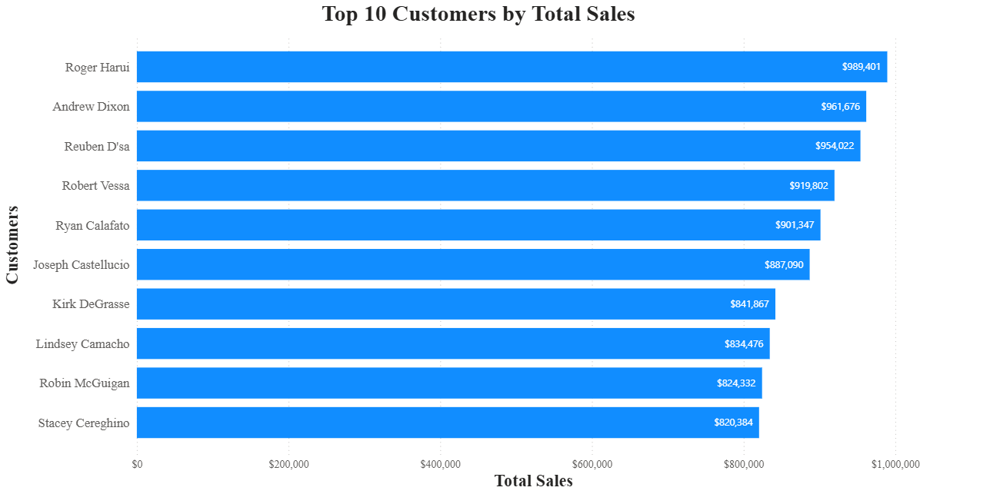
Top 10 Customers by Total Sales
Roger Harui leads with nearly $1M in sales, followed closely by Andrew Dixon and Reuben D’sa - showing a strong concentration among a few high-value customers.
The gap between the top and bottom of the list (roughly $170K) suggests that a small customer segment contributes disproportionately to total revenue.
This insight points to the importance of customer retention programs and personalized offers for these top buyers.
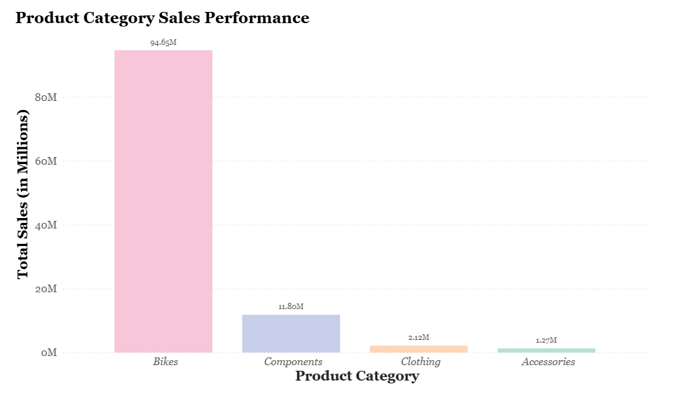
Product Category Sales Performance
Bikes overwhelmingly dominate total revenue at $94.65M, making up the majority of overall sales.
Components contribute $11.8M, while Clothing and Accessories remain much smaller segments at $2.1M and $1.27M respectively.
This strong imbalance indicates that AdventureWorks’ success heavily depends on the bike category.
Diversifying product focus or expanding underperforming categories could reduce risk and create more stable growth opportunities.
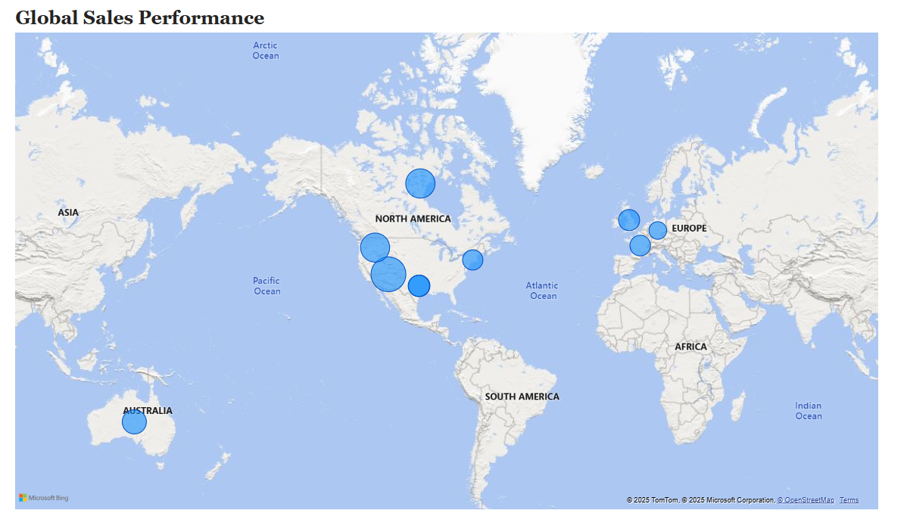
Global Sales Performance
The map reveals a strong concentration of sales in North America, led by the U.S. Southwest territory with over $27M in revenue.
Other top-performing regions include Canada and the U.S. Northwest, while European markets like the U.K. and France contribute moderate sales volumes.
This pattern indicates that AdventureWorks’ success is heavily anchored in North America, with room to expand presence in Europe and Asia-Pacific.
Targeted regional marketing and distribution strategies could help balance the company’s global performance.
Top Sales Representatives by Revenue
Linda Mitchell and Jillian Carson lead with $11.7M and $11.3M in total sales, standing out well above the rest of the team.
The next top performers - Michael Blythe, Jae Pak, and Tsvi Reiter - each generate between $8M and $10M, showing a strong upper-tier cluster.
This ranking highlights a clear top-heavy distribution where a few high achievers drive the majority of revenue.
It suggests an opportunity to analyze what drives their success, such as client portfolio or territory, and apply those insights to elevate mid-tier performers.
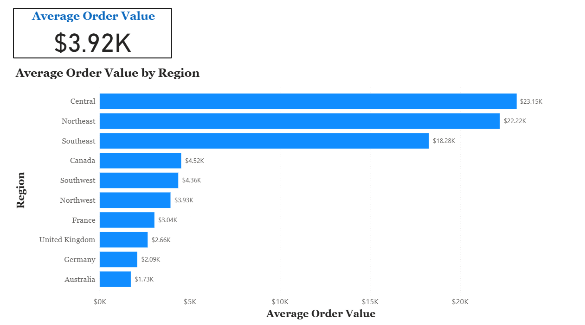
Average Order Value by Region
The Central and Northeast U.S. regions show exceptionally high average order values - around $23K and $22K - far exceeding the global mean of $3.9K.
This suggests larger or more premium orders concentrated in these areas.
In contrast, international markets such as Germany and Australia report lower order values, indicating smaller or more frequent purchases.
The data highlights clear regional differences in customer purchasing power and order size, offering valuable input for pricing and sales strategy adjustments.
Reflection
Working on this Business Intelligence project taught me how to connect raw data to meaningful stories.
Beyond writing SQL and building Power BI visuals, I learned how to translate complex datasets into insights that reveal business patterns, performance drivers, and opportunities for improvement.
This project strengthened my analytical thinking and my ability to communicate findings clearly - skills I now bring into every data-driven project I approach.
 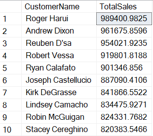
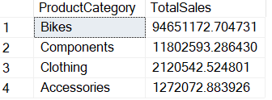
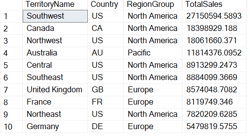
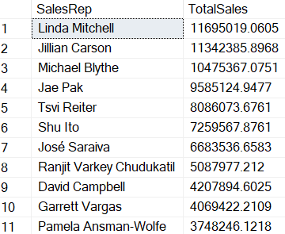
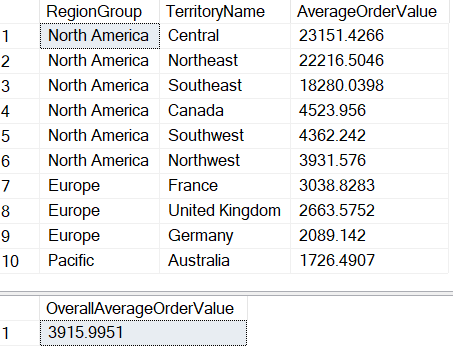
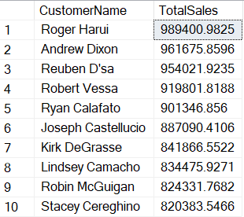
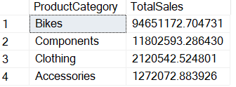
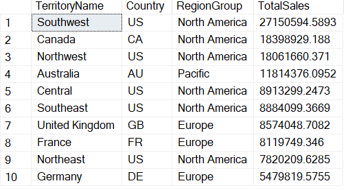
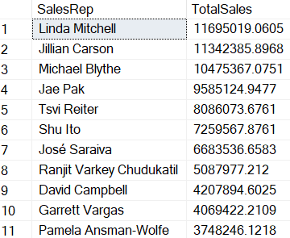
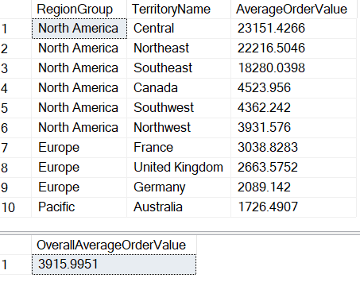